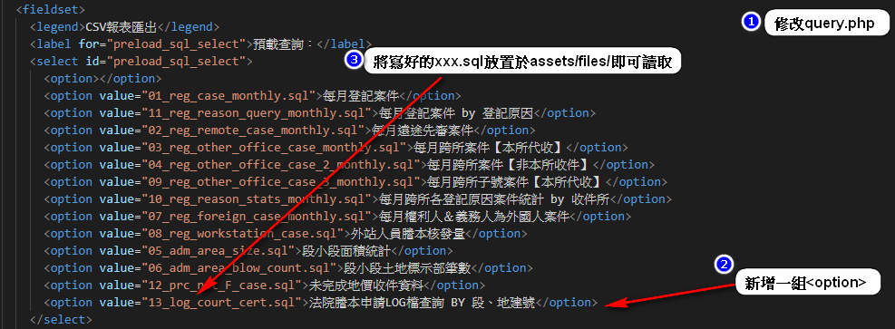

地政輔助系統
(α)
登記案件追蹤
查詢＆報表
監控＆修正
內部知識網
地所首頁
差勤系統
繼承案件應繼分
(α)
繼承案件輕鬆審
(β)
公務雲
分機查詢
案件辦理情形通知系統（簡訊＆EMAIL）
各類WEB版應用黃頁
報表匯出
預載查詢
每月案件統計
每月案件 by 登記原因
每月遠途先審案件
每月跨所案件【本所代收】
每月跨所案件【非本所收件】
每月跨所子號案件【本所代收】
每月跨所各登記原因案件統計 by 收件所
每月權利人＆義務人為外國人案件
每月外國人地權登記統計
每月土地建物登記統計檔
外站人員謄本核發量
已結卻延期之複丈案件
因雨延期測量案件數
段小段面積統計
段小段土地標示部筆數
未完成地價收件資料
法院謄本申請LOG檔查詢 BY 段、地建號
某段之土地所有權人清冊資料
全國跨縣市收件資料(108年)
AI00301 - 土地標示部資料
AI00401 - 土地所有權部資料
AI00601 - 土地管理者資料
AI00601 - 建物管理者資料
AI00701 - 建物標示部資料
AI00801 - 基地坐落資料
AI00901 - 建物分層及附屬資料
AI01001 - 主建物與共同使用部分資料
AI01101 - 建物所有權部資料
AI02901 - 土地各部別之其他登記事項列印
AI02901 - 建物各部別之其他登記事項列印
匯出
備註
輸入SELECT SQL指令匯出查詢結果。

©
LIU, PANG-YU
ALL RIGHTS RESERVED.